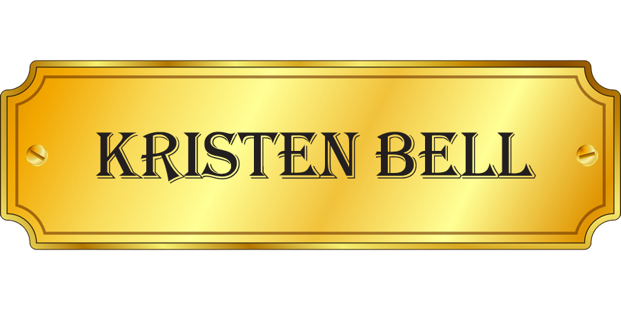
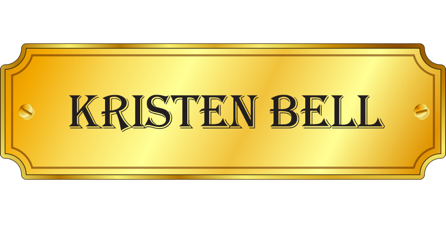

마법, 생명보다 더 큰 완벽한 신화 캐릭터
그녀의 왕국이 본인을 받아들인 것에 감사하며,
좋은 여왕이되기 위해 열심히 노력한다.
그러나 마음 속 깊은 곳에선 힘을 가지고 태어난 이유가 궁금하다.
이디나 멘젤
(Idina Menzel)
영화배우, 가수
출생: 1971.05.30
신체: 163cm
데뷔: 1998년 1집
[Still I Can't Be Still]
수상: 2004년 제28회 토니상 최우수 여우상
 

완벽한 동화 캐릭터
흔들리지 않는 영원히 낙천적인 사람이다.
가족이 있는 한 괜찮고, 아렌델은 안전하며,
다시는 혼자 일 필요가 없다.
크리스틴 벨
(Kristen Bell)
영화배우
출생: 1980.07.18
신체: 155cm
가족: 배우자 댁스셰파드
학력: 뉴욕대학교 티쉬예술학교 드라마 학사
데뷔: 2001년 영화 '푸티 탕'
수상: 2020년 제25회 크리틱스 초이스 시상식 시허상
진정한 아웃도어맨 캐릭터
높은 산에서 살며, 그곳에서 얼음을 수확하여 아렌델 왕국에 판매한다.
거친 산악인이자 얼음장수인 그는 안나를 만나기 전까지 순록친구 스벤과 함께 약간 외톨이였다.
아렌델의 공식 아이스 마스터이자 개발자인 그는 안나와 새로운 가족인
엘사, 올라프, 스벤과 함께 사랑을 찾았다.
조나단 그로프
(Jonathan Groff)
영화배우, 뮤지컬 배우
출생: 1985.03.26
신체: 180cm
학력: Conestoga Valley High School

따뜻한 포옹을 좋아하는 캐릭터
그는 아렌델 위의 산을 걷기엔 단연코 가장 친근한 눈사람이다.
엘사의 마법의 힘으로 만들어졌다.
천진난만하고 외향적이며, 여름에 관한 모든 것을 사랑한다.
약간 순진하지만 그의 성실함과 착한 기질은 그를 안나와 엘사의 진정한 친구로 만들었다.
조시 게드
(Josh Gad)
영화배우
출생: 1981.02.23
신체: 168cm
수상: 2008년 쇼웨스트 컨벤션 연기 특별상